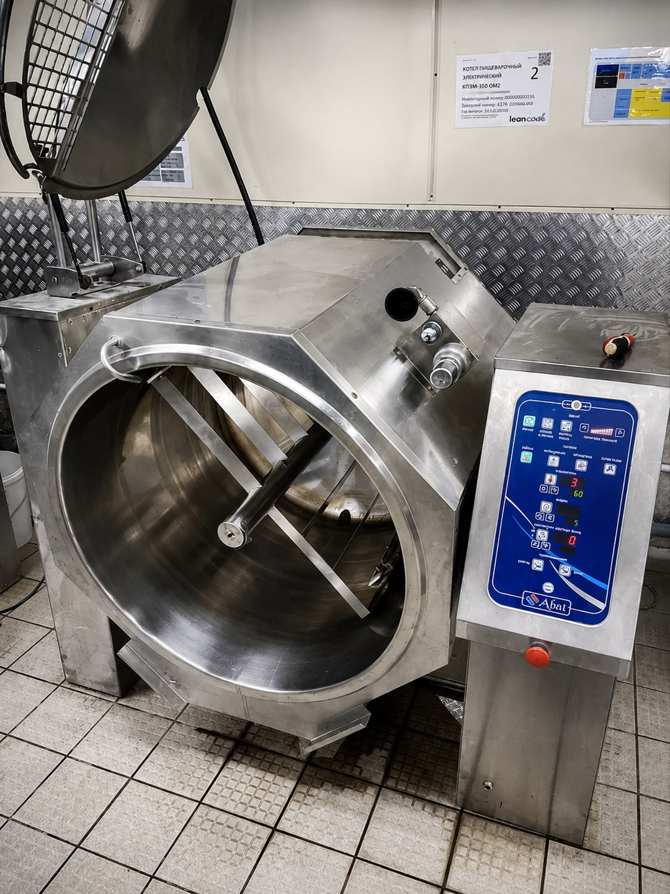

Стационарные
Нагрев, пароводяная рубашка, датчики, уровень воды, давление и продуктовый слив.
Перейти к КПЭМ →Разбираем заявку по конструкции котла, фактическому симптому и функциональной системе: нагрев, рубашка, давление, вода, слив, мешалка, опрокидывание или управление.
Сначала безопасность
Если растёт давление, выходит пар или вода из рубашки, выбивает автомат, пахнет гарью либо заклинило привод — остановите нагрев. Не открывайте горячую рубашку, не увеличивайте номинал автомата и не сбрасывайте защиту повторно.
Оборудование в эксплуатации
На фотографии видны рабочая ёмкость, привод мешалки и панель управления. При ремонте отдельно проверяют нагрев, привод, блокировки, датчики и электронное управление.

Изображение обработано для публикации. Мелкую маркировку, показания дисплеев и геометрию небольших деталей не используют для измерений, подключения или постановки диагноза без осмотра оборудования.
Конструкция определяет диагностику
Одинаковый симптом у стационарного котла, модели с мешалкой и опрокидываемой ёмкости может относиться к разным узлам и блокировкам.
Нагрев, пароводяная рубашка, датчики, уровень воды, давление и продуктовый слив.
Перейти к КПЭМ →Ручной или моторизованный привод, редуктор, концевые положения и блокировка нагрева.
Выбрать симптом →Двигатель, мотор-редуктор, преобразователь, вал, крышка и защитные блокировки.
Сценарий E17 →Функции мешалки, охлаждения и опрокидывания указываются только для моделей, где они предусмотрены производителем.
Вход по фактическому проявлению
На странице симптома разделяем вероятные системы, влияние на смену, безопасные действия персонала и проверки инженера.
ТЭНы, рубашка, уровень, датчики, управление
Мощность, теплопередача, накипь, датчики
Питание, защита, панель и цепь запуска
Пробой ТЭНа, влага или силовая цепь
Продуктовый кран, вода, соединения или рубашка
Манометр, герметичность и защитные устройства
Подача, клапан, уровень и управление
Кран, засор, механика и состояние продукта
Уровень воды, электрод и блокировка нагрева
Инженерная карта
Код или симптом не назначает деталь автоматически. Сначала проверяются условия работы, внешние нагрузки, проводка, измерительные цепи и только затем сам компонент.
ТЭНы, контакторы, токи по фазам и изоляция
Заполнение, герметичность и защита от сухого хода
Манометр, контроль давления и безопасный сброс
Показание, реальная температура, проводка и вход контроллера
Мотор, редуктор, преобразователь и механическая нагрузка
Привод ёмкости, положения и блокировки
Вода рубашки, продуктовый кран и соединения
Питание контроллера, входы, выходы и внешние нагрузки
Контур проверяется только у моделей, где охлаждение предусмотрено конструкцией.
Производитель и серия
Характеристики и системы безопасности нельзя переносить с одного производителя или поколения контроллера на другое.
Брендовый хаб
Семейства и конструкции
Нагрев, давление, залив и слив
Модель определяем по шильдику
Котлы и кипятильники
Другие марки уточняем по модели и доступной документации. Не обещаем универсальную расшифровку кода или совместимость детали без проверки шильдика.
Инженерный справочник
Обозначение входа, формулировка ошибки и последствия зависят от семейства и редакции контроллера. По одному коду нельзя назначать плату, датчик или ТЭН.
Открыть справочникТемпературный канал продукта
Точная цепь зависит от модели
E02Температурный канал рубашки
Проверяем датчик, проводку и вход
E04Аварийное давление
Не повторять сброс до проверки
H20 / Н20Недостаточный уровень воды
Нагрев может быть заблокирован
E17Привод мешалки
Относится к моделям с соответствующим приводом
Рабочий сценарий
Получаем фото шильдика, панели, описание и адрес объекта.
Определяем, допустим ли повторный запуск до выезда.
Проверяем питание, нагрузки, датчики, давление и механику по конструкции.
Согласуем объём работ до ремонта, затем оформляем акт.
Для первичной маршрутизации полезны фото шильдика и панели, объём котла, наличие мешалки или опрокидывания и точное проявление неисправности.
Частые вопросы
При E04, сухом ходе, выбивании автомата, запахе гари или утечке повторный запуск без проверки не рекомендуем.
Нет. Код задаёт направление проверки, но датчик, проводка, питание, внешний узел и контроллер проверяются отдельно.
Шильдик целиком, дисплей с кодом, общий вид котла и место течи или повреждения без разборки горячего оборудования.
Сначала проверяем питание и внешние нагрузки. При подтверждённой неисправности модуль можно демонтировать и передать в стационарную мастерскую.